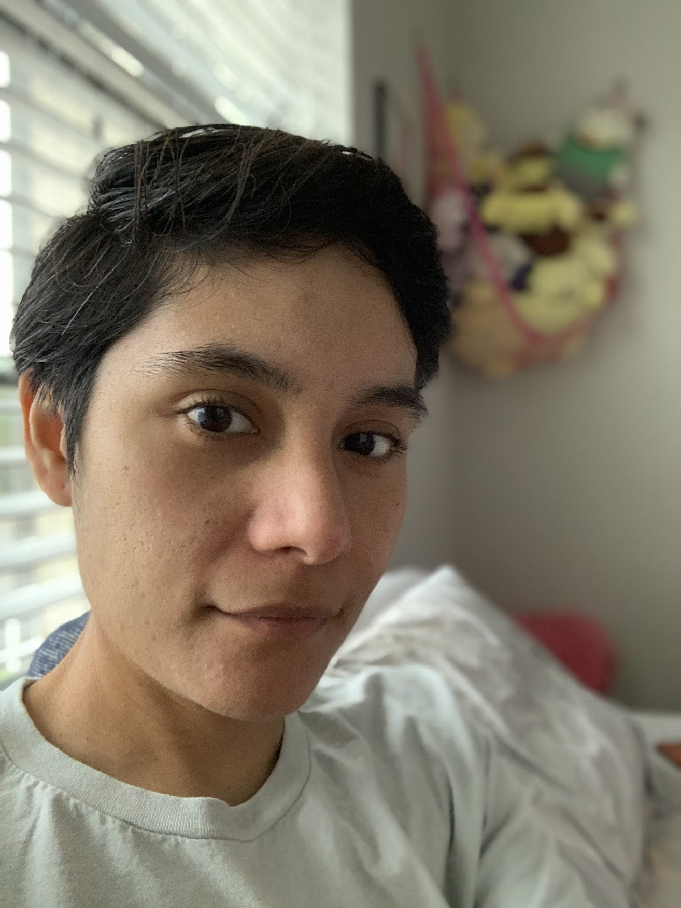

Ana (Ren) Casanova
IT Engineer

Professional Summary
Bilingual IT Support Engineer with 9+ years of expertise in cloud systems management, IT infrastructure
optimization, and end-to-end technical project leadership. Proficient in Azure, device provisioning, and scripting
automation (PowerShell, Python). Adept at troubleshooting complex systems, cross-department collaboration, and
delivering cost-saving IT solutions.
Technical Skills
Cloud & System Management: Azure, Active Directory, VPN, PXE Server, Imaging (Windows)
Scripting & Automation: Python, C++, C#, SQL, HTML, CSS, JavaScript
IT Support Tools: ServiceNow, SCCM, hardware/software deployment
Project Leadership: Process re-engineering, global IT deplymnet, training, inventory management
Work Experience
Application Readiness & Advanced Support
HCL Tech Contract to ExxonMobil | Spring, TX | April 2025 - Present
Served as an escalation point for Tier 1–2 teams, resolving complex technical issues across applications,
systems, and infrastructure.
Delivered permanent fixes to improve overall system reliability.
Collaborated cross-functionally with engineering, networking, and security teams to resolve high-impact
problems.
Provided PC hardware/software support using advanced diagnostic skills to resolve issues efficiently.
Team Lead
HCL Tech Contract to ExxonMobil | Spring, TX | Sept 2022 – March 2025
Lead deployment of device cloud environment for 10,000+ users, improving deployment efficiency by 40%.
Spearheaded ITIL-aligned troubleshooting for cloud devices, resolving 95% of issues within SLA.
Trained 1000+ North American IT staff on cloud deployment best practices and Azure tools.
Subject Matter Expert for cloud-managed technologies, supporting cross-functional teams and
engineering groups.
Managed stock lifecycle to support large-scale device rollouts and readiness.
Oversaw pre-provisioning, re-imaging, and provisioning tasks, ensuring fast device readiness.
Collaborated with engineering teams to troubleshoot device issues, improving reliability and minimizing
downtime.
IT Support Engineer
Hemmersbach Contract to Royal Dutch Shell | Houston, TX | June 2021 – Sept 2022
Installed, rebuilt, and configured PCs including OS imaging, storage, peripherals, and system services.
Troubleshoot Windows OS, network configuration, VPN, and hardware issues.
Provided remote support and maintained Loaner pool inventory.
Utilized ServiceNow for ticket workflows and incident management.
IT Contractor
Aristoi Classical Academy | Katy, TX | June 2020 – June 2021
Developed Python scripts to automate CANVAS LMS reporting, reducing manual workload by 25
hours/week.
Built PXE server to streamline imaging processes, cutting deployment time by 50%.
Prepared and deployed PCs for campus-wide distribution.
Configured SysAid ticketing system.
IT Support Engineer
TCS Contract to Royal Dutch Shell | Houston, TX | Oct 2017 – Aug 2020
Lead automated Windows OS imaging, deploying 30,000+ PCs/year using MDM tools, cutting deployment
time by 80%.
Re-engineered PC deployment standards for Shell’s largest global site, improving accuracy by 90%.
Resolved VPN connectivity issues and network configuration errors for remote users, achieving 98%
resolution rate.
PC Technician
Insight Global | Donna, TX | March 2017 – Aug 2017
Deployed 5,000+ PCs for Donna ISD, including Active Directory integration and anti-virus installation.
VoIP Technicial
Insight Enterprises, Inc | McAllen, TX | March 2017 - August 2017
IP Phone Deployment installation for the McAllen Regional Hospital, about 1,800 systems deployed.
Provided “White-Glove” customer service.
Computer Technicial
Edinburg Consolidated Independent School District | Edinburg, TX | November 2014 - September 2017
Provided staff and student tech support via ticketing system; handled repairs and troubleshooting.
Supported Windows systems, applications, and hardware; maintained backups and systems upgrades.
Assisted in inventory management and onboarding of new IT staff.
Education
Bachelor of Science in Computer Engineering
University of Texas Rio Grande Valley | Edinburg, TX | Aug 2007 – Dec 2016
Other
Hobbies
Contact
Copyrights © 2025 Ren Casanova. All Rights Reserved.